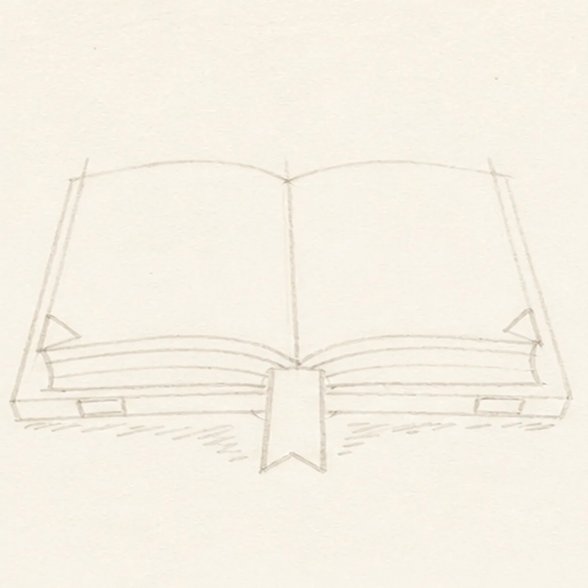
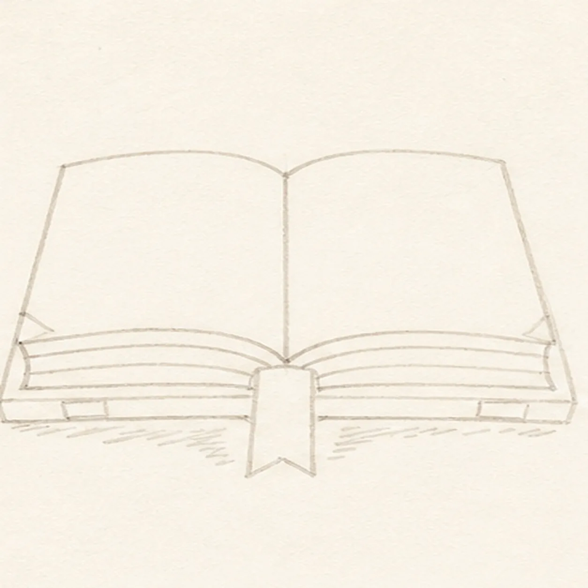

Marker ready?
Let's draw an open book with a ribbon bookmark
Treat this as one playful practice round: sketch the idea loosely, simplify the shapes, then commit with confident marker outlines and bright fills.
-
01

Map the open spread
Use pale construction to place two blank page faces, one center gutter, the lower page-block thickness, one cover edge, a ribbon route from the gutter, two corner-curl routes, exactly three lower page-edge bands per side, small cover-highlight gaps, and one broken shadow footprint.
Marker tip: Ghost the two broad page curves before touching down, then compare the wedges of paper on both sides of the gutter. Keep the bookmark route visible from the start so the page and cover lines can stop around it instead of needing erasure later.
-
02

Wrap the book silhouette
Add one loose open-book contour with exactly two broad blank page shapes and one V-shaped center gutter while preserving every cover, ribbon, curl, lower-band, highlight, and shadow route.
Marker tip: Rotate the page to pull each long outer edge in one relaxed stroke. Use the gutter as the hinge, and compare the two page widths rather than forcing ruler-perfect symmetry.
-
03
Build the page blocks
Clarify both page blocks, their lower thickness, one visible cover edge, and the center gutter while keeping the pale ribbon route and all six lower-band routes visible.
Marker tip: Draw the page faces first, then echo their lower curves to create thickness. Stop the inner page and cover lines at the bookmark route and check that the three bands on each side fan from the same gutter point.
-
04
Tuck in the coral ribbon
Trace one flat ribbon bookmark over its persistent pale route, fill it coral, and strengthen one small curl at each outer page corner without changing the book geometry.
Marker tip: Outline the ribbon from gutter to notch in one pass, then let the coral dry before touching the black edge later. Keep the gutter and cover lines broken where the ribbon overlaps them so the bookmark sits inside the book instead of on top.
-
05
Band the lower page edges
Darken exactly three stacked lower page-edge bands per side, fill those bands warm yellow, preserve the small cover-edge highlight gaps, and add one broken deep-navy shadow while leaving both broad page faces unmarked.
Marker tip: Pull each yellow stroke along the page curve and count three bands on both sides before moving on. Keep the shadow outside the book and ribbon silhouettes, and leave broken paper gaps so it does not become a smooth digital oval.
-
06
Ink the story-ready lines
Trace only the established page, gutter, cover, ribbon, curl, lower-band, highlight, and shadow boundaries with thick, slightly wobbly black felt-tip, then add short hatching along the outer cover edges.
Marker tip: Let the coral, yellow, and navy areas dry, then ink the small curls and gutter before rotating the page for the long silhouette. Use the heaviest line outside the book and lighter hatching inside the cover edge.
-
07
Fill the bright page color
Fill the established left blank page face and cover plane raspberry and the right blank page face and cover plane teal while preserving the yellow bands, coral ribbon, navy shadow, highlight gaps, and visible marker grain.
Marker tip: Pull broad marker strokes from the gutter toward each outer edge so the streaks follow the pages. Work one side at a time, let the first color dry, and stop short of the black outlines to avoid muddy bleed.
-
08
![Handmade face-free felt-tip marker drawing of one open book in a shallow three-quarter view with exactly two blank page blocks, one black V-shaped center gutter, one coral ribbon bookmark hanging from the gutter, one small curled outer corner on each page, exactly three stacked warm-yellow lower page-edge bands per side, raspberry marker fill across the left page and cover plane, teal marker fill across the right page and cover plane, small open-paper cover-edge highlights, thick imperfect black outlines, visible marker streaks, restrained edge hatching, and one broken deep-navy shadow](assets/open-book-with-ribbon-bookmark-finished-v1.webp)
Turn the page on the finish
Strengthen selected established black edges, even the same marker fills, clarify the cover-edge highlight gaps, and deepen only the existing hatching and broken shadow.
Marker tip: Count two page blocks, one gutter, one ribbon, two curls, three yellow bands per side, and one shadow before stopping. Change the page palette in your own version if you like, but keep the overlap order, blank surfaces, and handmade marker grain.
![Handmade face-free felt-tip marker drawing of one diagonal pickleball paddle with one thick oval face divided into raspberry, teal, and mustard color blocks by exactly two diagonal routes, one doubled black rim, one short neck, one coral handle with exactly three curved grip bands and a small end cap, one mustard pickleball at upper right with exactly seven visible open holes, two black paddle-swing arcs, exactly three black ball-speed dashes, two open-paper oval highlights on the paddle face, thick imperfect black outlines, visible marker streaks, and one broken deep-navy shadow beneath the handle](assets/pickleball-paddle-and-ball-in-motion-finished-v1.webp)
![Handmade felt-tip marker drawing of one mischievous cool-gray raccoon peeking from one open teal trash can with exactly two coral-lined ears, two asymmetric charcoal mask patches, one half-lidded eye and one wide eye glancing toward the right side of the page, one raised brow, one dark nose, one crooked grin with one small tooth, exactly two gray paws gripping the front rim, one curled gray tail with exactly three charcoal bands, exactly two can handles, exactly four long can ribs, one tall open-paper highlight, two mustard accent blocks, one diamond-shaped dent, thick imperfect black outlines, visible marker streaks, and one broken deep-navy shadow](assets/raccoon-peeking-from-trash-can-finished-v1.webp)